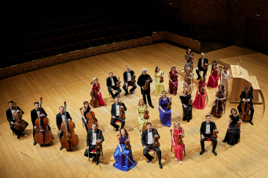

Мариинский театр – к 345-летию со дня рождения Антонио Вивальди
07.04.2023

8 и 9 апреля в Мариинском театре пройдут концерты, посвященные
345-летию со дня рождения Антонио Вивальди. Со сцены Концертного зала
прозвучат знаменитые «Времена года» и другие сочинения выдающегося
итальянского композитора.
Первый концерт-посвящение пройдет 8 апреля в 13:00 в рамках
Международного фестиваля флейтовой и арфовой музыки «Виртуозы флейты»
& «Северная лира». Струнный оркестр Мариинского театра, ведущие
солисты труппы, приглашенные музыканты, а также студенты
Санкт-Петербургской консерватории им. Н. А. Римского-Корсакова решили
отдать дань богатому музыкальному наследию Вивальди специальной
программой. Композитор, известный прежде всего концертами для скрипки,
будет представлен как автор поэтичных сочинений для арфы и флейты,
среди которых – «Щегленок», «Фолия», «Буря на море» и «Ночь», один из
первых симфонических ноктюрнов в мировой музыке. В программе также
концерты для других инструментов в транскрипции для арфы и флейты.
На следующий день, 9 апреля, в Концертном зале прозвучат «Времена
года» в исполнении барочных струнных — инструментов, созданных
великими итальянскими мастерами еще при жизни Вивальди. Знаменитое
произведение исполнят Страдивари-ансамбль Мариинского театра под
руководством солиста и дирижера Лоренца Настурики-Гершовичи и Елена
Серова (клавесин). Программу дополнит «Адажио Альбинони» Ремо
Джадзотто — одно из самых популярных сочинений второй половины XX
века. Это произведение не раз использовали в кинематографе, а также
создавали на его основе песни и инструментальные композиции. Партию
органа исполнит Ольга Котлярова.